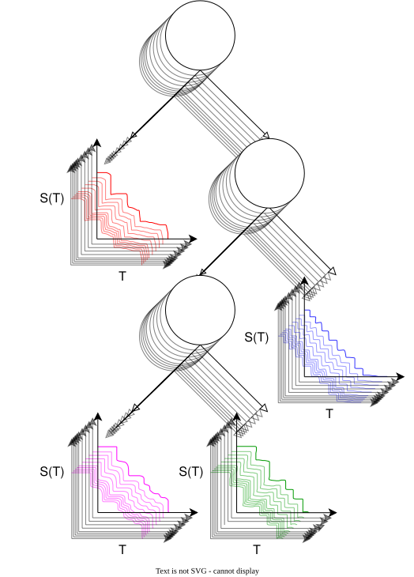

Machine Learning in Survival Analysis
Getting Started

by Raphael Sonabend and Andreas Bender
This book is a work in progress, the final work will be published by CRC Press. This electronic version (including PDF download) will always be free and open access (CC BY-NC-SA 4.0). We appreciate that you can enjoy this book for free online or buy the physical format and we hope you choose whichever is most convenient for you. Buying the book will be the greatest indicator to us that a second edition may be useful in the future.
We will strive to update this version after publication to correct mistakes (big and small), if you notice any mistakes please feel free to open an issue.
Licensing
This book is licensed under CC BY-NC-SA 4.0, so you can adapt and redistribute the contents however you like as long as you: i) do cite this book (information below); ii) do not use any material for commercial purposes; and iii) do use a CC BY-NC-SA 4.0 compatible license if you adapt the material.
If you have any questions about licensing, just open an issue and we will help you out.
Citation Information
Whilst this book remains a work in progress you can cite it as
Sonabend. R, Bender. A. (2025). Machine Learning in Survival Analysis.
https://www.mlsabook.com.
@book{MLSA2025,
title = {Machine Learning in Survival Analysis},
editor = {Raphael Sonabend, Andreas Bender},
url = {https://www.mlsabook.com},
year = {2025}
}Contributing to this book
We welcome contributions to our book, whether you’re pointing out typos, requesting content, or even adding your own text. Major contributions (adding or reviewing content) will be acknowledged in the preface of the book.
Before you contribute, please read our code of conduct and then open an issue to discuss your proposed contribution.
Biographies
Dr Raphael Sonabend-Friend is an Associate Director at the National Institute for Health and Care Excellence (NICE) and the CEO and Co-Founder of OSPO Now. Raphael holds a PhD focussed on the accessible and transparent use of machine learning for survival analysis. Raphael has over a decade of experience in the healthcare sector, including with large philanthropies, small local charities, governmental bodies, and private sector consulting for UK and international organisations. Raphael has created and maintained several software packages for survival analysis and machine learning, including mlr3proba, survivalmodels, and SurvivalAnalysis.jl. Raphael co-edited and co-authored Applied Machine Learning Using mlr3 in R (Bischl et al. 2024).
Andreas Bender is FIXME.
Preface
“Everything happens to everybody sooner or later if there is time enough” - George Bernard Shaw
“…but in this world nothing can be said to be certain, except death and taxes.” - Benjamin Franklin
These quotes aptly describe the core assumptions of survival analysis (specifically single-event analysis, but we’ll get to that later). In the simplest application, the goal of predictive survival analysis is to estimate the probability of an event occurring over time, with the assumption that the event should occur at some point. Survival analysis places significant emphasis on that word ‘should’. Given enough time, and no extraneous events, the event of interest should happen. However, time is finite and occasionally competing events can prevent the target under investigation.
For example, a runner should finish a race. However, they may fail to do so if they take so long that the race ends, if the person next to them falls over and causes pile-up, or if they collapse from exhaustion. Therefore, there is uncertainty about if they will finish the race and when. Survival analysis differs from other fields of statistics in that this uncertainty is explicitly encoded in the survival problem, as ‘censoring’. Instead of being excluded from a dataset, the runner is said to have been censored at the time at which they are no longer running the race. There are also different mechanisms for censoring; indeed, in the examples above we illustrated several different censoring mechanisms, which will be discussed in detail in this book. Censoring is central to survival analysis, and without the presence of censoring, survival analysis is mathematically equivalent to regression on the fully observed event times.
This book focuses entirely on predictive survival analysis (which we refer to simply as ‘survival analysis’), which is focused on forward-looking predictions. This is in contrast to inference methods, which examine model parameters to learn information about a given dataset or model. This book also does not cover using the discussed models to predict the remaining lifetime for in-sample censored observations. Bayesian methods are also not included as these remain nascent in the machine learning survival analysis setting, any future editions will endeavour to include these methods. Predictive survival analysis is a hugely important area of statistics, with numerous applications across a wide variety of industries, for example:
- Manufacturing: Predict the time to equipment failure;
- Pharmaceutical: Predict a patient’s survival trajectory after novel treatment;
- Healthcare: Predict a patient’s survival time after infection with meningitis;
- Finance: Predict the time until a customer defaults on a loan;
- Marketing: Predict the risk of a customer churning;
- E-commerce: Predict the time until next purchase for personalized marketing;
And many, many more examples.
Despite its importance in many real-world settings, survival analysis has lagged behind other predictive fields such as classification and regression. This gap may be in part due to the sensitive and highly regulated domains in which survival analysis is typically applied. In these environments, ‘black-box models’, models that are difficult to interpret, may be less appealing than transparent linear models that can be implemented easily using graphical, non-programming tools such as Excel. The longer this gap persists, the harder it will become for practitioners to adopt modern methods and the more resistance will build.
The rapid rise of generative artificial intelligence (genAI) with tools such as ChatGPT, Gemini, and Claude, puts the field of survival analysis at an interesting fork. Traditional machine learning methods, those not using genAI, are deeply embedded in industry for regression and classification, with extensive experience and evidence indicating where these methods do and do not succeed; allowing for a measured and evidence-based transition to genAI. In contrast, the slower adoption of machine learning in survival analysis means the field could leapfrog technologies directly to genAI approaches. We are already seeing vendors selling genAI survival analysis tools to private- and public-sector organizations. Behind the scenes, some of these tools are writing code in Python or R to build machine learning survival analysis models, with limited (or no) human scrutiny. Therefore, we argue, now more than ever, there is an urgent need for machine learning survival analysis models to be widely understood.
This book focuses entirely on ‘traditional machine learning’. We do not advocate for or against genAI in survival analysis. Instead, we hope to equip practitioners with a solid grounding of traditional techniques so they can choose among methodologies rather than defaulting to genAI simply because it becomes the norm. Further, we hope that more understanding of traditional methods will also support practitioners in evaluating external technologies.
A note from Raphael: I wrote my PhD thesis about machine learning applications to survival analysis because I was interested in understanding why more researchers were not using machine learning models for survival analysis. Since then, I feel that little has changed, even with the rapid rise of generative AI. The field continues to lag behind but now with more challenges than ever. Over the years, I’ve had the pleasure to work with, and advise, researchers across different sectors, including pharmaceutical companies, governmental agencies, funding organizations, and research institutions. I hope that this book continues to help researchers discover machine learning survival analysis and to navigate the nuances and complexities it presents.
A note from Andreas: FIXME.
Overview of the book
This book is intended to fill a gap in the literature by providing a comprehensive introduction to machine learning in the survival setting. If you are interested in machine learning or survival analysis separately, then you might consider James et al. (2013); Hastie et al. (2001); or Bishop (2006) for machine learning and Collett (2014) or Kalbfleisch and Prentice (1973) for survival analysis. This book serves as a complement to the above works and introduces common machine learning terminology from simpler settings such as regression and classification, but without diving into the detail found in other sources. This book is centred on the intersection of the two areas and defining the suitability of different methods and models depending on the availability data. For example, given right-censored survival data, when might you consider a neural network instead of a Cox Proportional Hazards model? Or given competing risks when tackling a discrimination problem, should you prefer Antolini’s or Harrell’s concordance index? Can you even use a machine learning model if you have left-censored multi-state data? All these terms and more will be defined in this book to hopefully provide a practical guide to machine learning survival analysis.
This book may be useful for Master’s or PhD students who are specializing in machine learning in survival analysis, machine learning engineers looking to solve problems involving censoring, or practitioners familiar with survival analysis but with less applied machine learning experience. The book can be read cover-to-cover, but we believe it will be more useful as a reference book for you to dip into as required.
Following the introduction, this book is structured in four parts:
Part I: Machine Learning and Survival Analysis
An introduction to the basics of survival analysis, with some more advanced concepts in the more general ‘event history analysis’ setting, which encompasses competing risks and multi-state models. In addition, there is a brief overview to machine learning, including key concepts that are utilized throughout the survival domain. This Part concludes by unifying terminology between machine learning and survival analysis to define what it means to have different survival prediction problems and a ‘machine learning survival analysis’ task.
Part II: Evaluation
The second part of the book discusses model evaluation. Evaluation is crucial for choosing between models and eventually trusting the predictions from a trained machine learning model. Part II introduces measures for evaluating the different types of predictive task introduced in Part I. In each chapter, the measure class is introduced, specific metrics are listed, and commentary is provided on how and when to use the measures. Recommendations for choosing measures are discussed in the final chapter of the book. As this book focuses on the predictive setting, the evaluation measures introduced in Part II are all ‘out-of-sample’ measures, to be used for evaluating models on new, unseen data. This is in contrast to ‘in-sample’ measures, which evaluate how well a model is fit to data, and are usually preferred for inference tasks. Readers who are interested in in-sample measures are directed to Collett (2014) and Hosmer Jr et al. (2011) for discussion on residuals; Choodari-Oskooei et al. (2012) and Royston and Sauerbrei (2004) for \(R^2\) type measures; and Volinsky and Raftery (2000); Hurvich and Tsai (1989), and Liang and Zou (2008) for information criterion measures.
Part III: Models
Part III is a deep dive into models for solving survival analysis problems. This begins with ‘traditional survival’ models that may not be considered ‘machine learning’ by some; although, as will be shown, with a small level of tweaking, these models can be exceptionally powerful. This Part of the book continues by exploring different classes of machine learning models including random forests, support vector machines, gradient boosting machines, and neural networks. Whilst this book does not go into extensive detail about deep learning, the final chapter of this Part provides a foundation that can be complemented by works such as Goodfellow et al. (2016).
Each model class is introduced in classification or regression settings with extensions to survival analysis then discussed. Differences between model implementations are not discussed, that is, there is not extensive detail on whether one specific algorithm is superior to another. Instead, the focus is on understanding how these models are built for survival analysis In this way, readers are well-equipped to independently follow papers that introduce specific implementations.
Part IV: Reduction Techniques
The final Part introduces reduction techniques, which are methods to solve survival analysis problems by using methods from other fields. In particular, chapters focus on demonstrating the close connections between competing risks, discrete time, Poisson, classification, and regression settings. Practitioners who are comfortable with other machine learning fields may find this Part of the book most useful for quickly implementing familiar models within the survival analysis domain.
The book’s final chapter lists common practical problems that occur when running survival analysis experiments, as well as solutions that we have found useful. We additionally provide our outlook on survival analysis and where we think the field may be heading.
Acknowledgments
We would like to gratefully acknowledge our colleagues who reviewed the content of this book, including: Lukas Burk, Dr Cesaire Fouodo, Prof. Dr.Helmut Küchenhoff, Prof. Dr. Matthias Schmid, as well as all the anonymous reviewers who took the time to review and provide detailed feedback.
Parts of this book were reviewed and revised using generative AI tools. The authors fact-checked all responses and re-wrote any suggested text to ensure our own voice can be found throughout the book. We acknowledge the decades of literature that was scraped (legally or otherwise) by these tools.